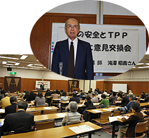

|
|
1．開会あいさつ（岩岡埼玉消団連事務局長） 私たち消費者は食の安全・安心、食料の安定供給、食料自給率、自然環境保全など、学習して中身をよく理解し、世論をつくっていくことが大切です。 2．講演 講 師：滝澤昭義氏(NPO法人食農研センター理事等、元明治大学教授) ＜概 要＞  アメリカがTPPにこだわりを持つ理由は、日本が参加しないと意味がないからです。日本ほど人口が多くて経済発展している国はTPPに今のところ参加していません。中国は不参加です。ASEANから参加を要請されている、参加しないと世界の孤児になるという報道に、国民は惑わされている状態です。｢開国だ｣と言う人もいますが、現在も大いに開かれた国で、食料のカロリー60％強を輸入しています。農産物の関税率もEUや韓国と比較すると、かなり低い数字です。 農産物の輸入により国内農業は1/10に縮小し、壊滅します。検疫や食品添加物、安全基準、排ガス規制、金融、保険、医療等の資格規制、日本語習得義務等が関税以外の貿易障壁としてあげられます。保険に関しては、薬の価格基準決定も含まれます。検疫では、アメリカの基準による農薬の使用が許され、収穫後の農薬散布や有機農産物の殺虫剤残留容認があり、日本の食の危機を感じます。 このままでは、日本人が食べるものをできるだけ自国で作り、何を食べるか私たち自身が決めるという権利、｢食料主権｣も壊れてしまいます。立場を超えて、食と生活を守る人たちと手と手を組み運動をしていかなければと思います。 3．意見交換（○は質問・意見、→は答え） ○急いでTPPへ参加をしないと、オーストラリアの資源の確保が難しくなるというのはどういう事ですか。 →日本は現在も多くの鉄鉱石などの鉱物を輸入しています。オーストラリアはいろいろな種類の鉱物を持っているので、さらに輸入しようとしている事が予想できます。中国も同じ考えが予想されるので早く参加をと考えているようです。 |